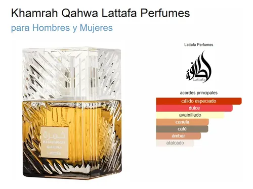

Familias olfativas de Lattafa Khamrah
Lattafa Khamrah es una creación insignia de la perfumería oriental contemporánea. Su composición entrelaza de forma armónica las siguientes familias y facetas olfativas:
- Familia Oriental / Ambarada (Eje principal): Es el pilar de la loción y su sello distintivo. Aporta un carácter opulento, cálido y envolvente gracias a la riqueza de la mirra, el benjuí balsámico y las maderas ambaradas que le dan su estela profunda y duradera.
- Familia Especiada Cálida: Define el impacto inicial de la fragancia. Está liderada por una canela dulce intensa y nuez moscada, generando una sensación acogedora, aromática y picante ideal para la noche y climas fríos.
- Familia Gourmand (Dulce repostero): Es la faceta más adictiva y moderna de esta loción, construida con acordes exquisitos de dátiles confitados, bombón praliné y vainilla cremosa que le otorgan una textura casi licorosa.
- Familia Amaderada: Confiere fijación, cuerpo y solidez estructural a través de notas de madera de ámbar (Amberwood), Akigalawood y los matices secos y tostados del haba tonka.
- Familia Floral Blanca (Matiz de equilibrio): Un toque sutil y elegante en el corazón aportado por los nardos y el mahonial, cuya suavidad aterciopelada redondea las especias y evita que el dulzor abrume.
Pirámide olfativa: Notas de la loción
La evolución de Lattafa Khamrah en piel se despliega en tres etapas olfativas continuas:
- Notas de Salida (Apertura - primeros 15 a 30 minutos): Canela intensa, nuez moscada especiada y una chispa cítrica de bergamota que aporta frescor a la entrada.
- Notas de Corazón (Cuerpo - entre 1 y 4 horas): Dátiles dulces del Medio Oriente, praliné acaramelado, nardos y mahonial.
- Notas de Fondo (Base y secado - fijación de 8 a 12+ horas): Vainilla de Madagascar, haba tonka tostada, mirra balsámica, benjuí, madera de ámbar (Amberwood) y Akigalawood.
Concentraciones y fijación
Guía técnica de concentración de aceites esenciales y longevidad en piel (Lattafa Khamrah corresponde a la concentración Eau de Parfum):
| Tipo de concentración | Porcentaje de esencia | Duración promedio |
|---|---|---|
| Parfum (Extracto puro) | 20% - 40% | 12 a 24 horas |
| Eau de Parfum (EdP) - Lattafa Khamrah | 15% - 20% | 8 a 12+ horas |
| Eau de Toilette (EdT) | 5% - 15% | 4 a 7 horas |
| Eau de Cologne (EdC) | 2% - 4% | 2 a 3 horas |
Material y enlaces de consulta
Accede a fuentes especializadas del sector de la perfumería internacional o descarga nuestra guía técnica:
Galería ilustrativa

Video: Unboxing y presentación de Lattafa Khamrah
Conoce en detalle la lujosa caja de exhibición, el frasco de cristal tallado y las primeras impresiones de sus notas aromáticas: